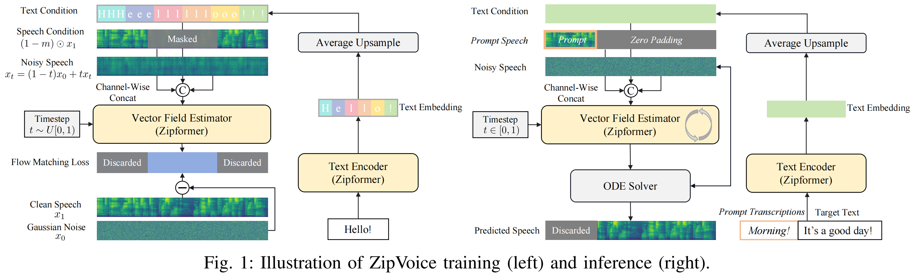

ZipVoice⚡️
Fast and High-Quality Zero-Shot Text-to-Speech with Flow Matching
Abstract Existing large-scale zero-shot text-to-speech (TTS) models deliver high speech quality but suffer from slow inference speeds due to massive parameters. To address this issue, this paper introduces ZipVoice, a high-quality flow-matching-based zero-shot TTS model with a compact model size and fast inference speed. Key designs include: 1) a Zipformer-based flow-matching decoder to maintain adequate modeling capabilities under constrained size; 2) Average upsampling-based initial speech-text alignment and Zipformer-based text encoder to improve speech intelligibility; 3) A flow distillation method to reduce sampling steps and eliminate the inference overhead associated with classifier-free guidance. Experiments on 100k hours multilingual datasets show that ZipVoice matches state-of-the-art models in speech quality, while being 3 times smaller and up to 30 times faster than a DiT-based flow-matching baseline. Codes, model checkpoints and demo samples are publicly available at https://github.com/k2-fsa/ZipVoice.
Contents
Model Overview

Figure 1: An overview of ZipVoice. ZipVoice consists of a text encoder and a flow-matching decoder, both employing Zipformer as the backbone. The model is trained with the condition flow matching loss and speech-infilling task. The input text is initially aligned with the speech with average upsampling.
Samples in this demo page are generated with ZipVoice (NFE=16) and ZipVoice-Distill (NFE=8).
Same Language Zero-shot Generation
Prompt and text are from the demo page of Seed-TTS.
| Prompt | Text | ZipVoice | ZipVoice-Distill |
|---|---|---|---|
I don't really care what you call me. I've been a silent spectator, watching species evolve, empires rise and fall. But always remember, I am mighty and enduring. Respect me and I'll nurture you; ignore me and you shall face the consequences. |
|||
Perhaps they are driven by the delicious blend of flavors, or it could be the appealing visual presentation. At the end of the day, our choices in food reflect our personal preferences and sometimes, even our lifestyle or belief system. |
|||
Your safety and the pack's reputation are at stake. Your bravery is admirable, but sometimes bravery is knowing when to retreat. Please, consider returning with me. We can work out a plan, but only if you're willing to listen. |
|||
突然，身边一阵笑声。我看着他们，意气风发地挺直了胸膛，甩了甩那稍显肉感的双臂，轻笑道："我身上的肉，是为了掩饰我爆棚的魅力，否则，岂不吓坏了你们呢？" |
|||
顿时，气氛变得沉郁起来。乍看之下，一切的困扰仿佛都围绕在我身边。我皱着眉头，感受着那份压力，但我知道我不能放弃，不能认输。于是，我深吸一口气，心底的声音告诉我：“无论如何，都要冷静下来，重新开始。” |
|||
皇上的面色未变，宛如雕塑般静止，他的眼中闪过一丝动人的温度。他深深地看了那位忠心耿耿的臣子一眼，终于开口：“诺，我会再考虑考虑的。”他的声音低沉且坚定，留下空气中隐隐的无奈与柔情。 |
Cross-Lingual Zero-shot Generation
Prompt and text are from the demo page of Seed-TTS.
| Prompt | Text | ZipVoice | ZipVoice-Distill |
|---|---|---|---|
顿时，气氛变得沉郁起来。乍看之下，一切的困扰仿佛都围绕在我身边。我皱着眉头，感受着那份压力，但我知道我不能放弃，不能认输。于是，我深吸一口气，心底的声音告诉我：“无论如何，都要冷静下来，重新开始。” |
|||
我抬起头，坚定地说：“身高不能决定一切，这世界在看我，我更看得到世界。无论是北上广，或是别的什么，我都将以我自己的方式去攀爬，去追逐。我可能小，但我绝不会被忽视。” |
|||
你的安全以及族群的声誉都危在旦夕。你的勇敢令人钦佩，但有时候勇敢在于懂得何时撤退。拜托，考虑一下和我一起回去吧。我们可以制定一个计划，但前提是你愿意倾听。 |
|||
Suddenly, there was a burst of laughter beside me. I looked at them, stood up straight with high spirit, shook the slightly fleshy arms, and smiled lightly, saying, "The flesh on my body is to hide my bursting charm. Otherwise, wouldn't it scare you?" |
|||
Suddenly, the atmosphere became gloomy. At first glance, all the troubles seemed to surround me. I frowned, feeling that pressure, but I know I can't give up, can't admit defeat. So, I took a deep breath, and the voice in my heart told me, "Anyway, must calm down and start again." |
|||
The emperor's complexion did not change, remaining as still as a sculpture, and a touch of touching warmth flashed in his eyes. He deeply glanced at the loyal minister, and finally spoke: "Well, I will consider it again." His voice was low and firm, leaving a faint hint of helplessness and tenderness in the air. |